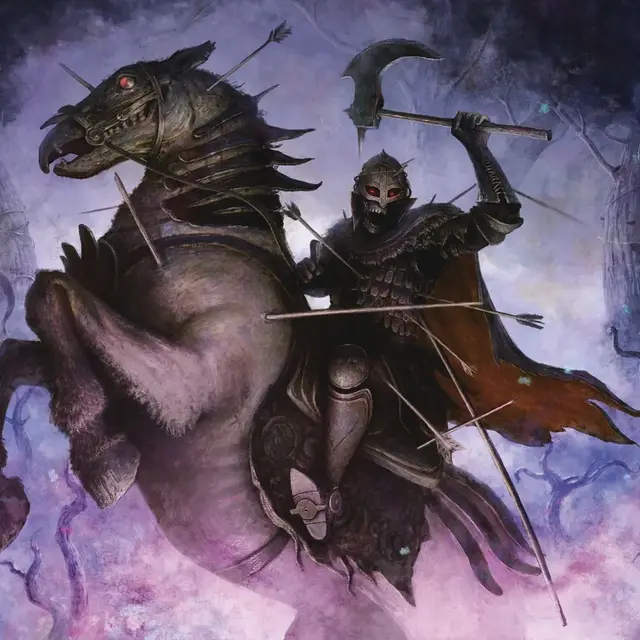

Бессмертный всадник
Deathless Rider
Средняя Нежить, законно-злая

Класс Доспеха 18 (кольчуга, щит)
Хиты 84 (13к8 + 26)
Скорость 20 футов
| мод | спас | ||
|---|---|---|---|
| СИЛ | 18 | +4 | +7 |
| ЛОВ | 10 | +0 | +0 |
| ТЕЛ | 14 | +2 | +5 |
| мод | спас | ||
|---|---|---|---|
| ИНТ | 6 | −2 | −2 |
| МДР | 6 | −2 | −2 |
| ХАР | 5 | −3 | −3 |
Навыки Атлетика +7, Восприятие +1
Сопротивление урону некротическая энергия
Иммунитет к урону яд
Иммунитет к состояниям истощение, отравление
Чувства тёмное зрение 60 футов, пассивное Восприятие 11
Языки понимает языки, которые знал при жизни, но не может говорить
Опасность 5 (1800 опыта)
Бонус мастерства +3
Особенности
Эксперт верховой езды. Пока всадник находится верхом и дееспособен, он с преимуществом совершает броски рукопашной атаки против любого пешего существа, меньшего размера, чем его скакун. И всадник и его скакун с преимуществом совершают спасброски Ловкости. Всадник может перенаправить на себя атаку, направленную на его скакуна.
Стойкость нежити. Если урон снижает хиты всадника до 0, он должен совершить спасбросок Телосложения Сл, равной 5 + полученный урон, если только этот урон не является излучением или получен от критического попадания. В случае успеха вместо этого хиты всадника падает до 1 хита.
Действия
Мультиатака. Всадник совершает две атаки Топором. Он может заменить одну из этих атак на Пугающий взгляд.
Топор. . Рукопашная атака оружием: +7 к попаданию, досягаемость 5 фт., одна цель. Попадание: 13 (2к8 + 4) рубящего урона.
Пугающий взгляд. Всадник смотрит на одно существо в пределах 30 футов. Существо должно преуспеть в спасброске Мудрости Сл 13, иначе оно будет испуганно всадником в течение 1 минуты. Испуганное существо может повторять спасбросок в конце каждого своего хода. Спасбросок совершается с помехой, если оно видит всадника, и при успехе перестает быть испуганным.
Описание
«Отправился в дебри? Остерегайтесь мертвых всадников, которые служат Королеве Теней».
— Скалан, трактирщик Эджволла
Легенды, рассказанные при дворах Элдраина, предполагают, что бессмертные всадники служат королеве-колдунье, известной просто как Королева Теней, которая правит из замка под названием Диннистан. Неизвестно, основаны ли эти легенды на каком-либо реальных событий или являются просто результатом воображения, пытающегося объяснить ужасающий и необъяснимый феномен.
Но бессмертные всадники, несомненно, реальны. Это рыцари-нежити, когда-то были людьми, они ездят на мертвых конях через самые отдаленные уголки дикой природы. Их иногда называют рыцарями-личами или павшими всадниками.
В отличие от рыцарей Элдраина, бессмертные всадники лишены каких-либо добродетелей. Их немного, если только в темном сердце леса не скрывается гораздо больше людей, чем кто-либо знает. Но когда смертные рыцари встречают их в дебрях, встреча редко заканчивается хорошо для живых. Бессмертные всадники сражаются со сверхчеловеческой силой, не обращая внимания на раны и неустанно атакуя.
Типичным ездовым животным бессмертного наездника является скелет боевого коня [warhorse], хотя некоторые рыцари-личи ездят на духах лошадей, словно на кошмарах [nightmare].